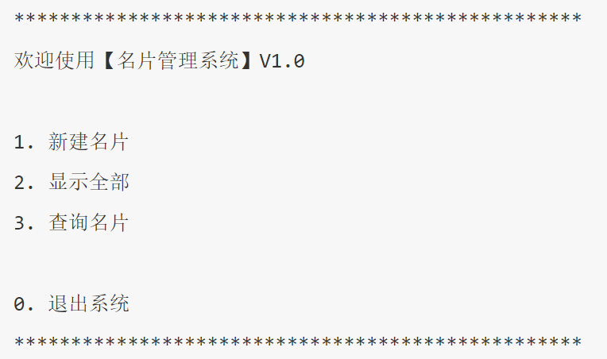

<!DOCTYPE lake>
<h2 data-lake-id="NDTqj" data-lake-index-type="2" id="NDTqj"><span data-lake-id="u428314d6" id="u428314d6">需求</span></h2><blockquote class="lake-alert lake-alert-info" data-lake-id="u7e801096" id="u7e801096"><ol list="udc834e7b"><li data-lake-id="u26e9fed7" fid="u9908cf13" id="u26e9fed7"><span data-lake-id="u3e6e9a51" id="u3e6e9a51">程序启动，显示名片管理系统欢迎界面，并显示功能菜单</span></li><li data-lake-id="uc22763e2" fid="u9908cf13" id="uc22763e2"><span data-lake-id="u3322bd93" id="u3322bd93">用户用数字选择不同的功能：</span><code data-lake-id="ub2438e95" id="ub2438e95"><span data-lake-id="uc77d343f" id="uc77d343f">新建名片、显示名片、查询名片、退出系统</span></code></li></ol><ol data-lake-indent="1" list="udc834e7b"><li data-lake-id="u2c0e4499" fid="u9908cf13" id="u2c0e4499"><span data-lake-id="udc3f4c61" id="udc3f4c61">用户名片需要记录用户的 </span><code data-lake-id="u56a3b3dd" id="u56a3b3dd"><span data-lake-id="u3c13a354" id="u3c13a354">姓名、电话、QQ、邮件</span></code></li><li data-lake-id="ub626a30e" fid="u9908cf13" id="ub626a30e"><span data-lake-id="udf46eb80" id="udf46eb80">显示名片可以列举出所有已经保存的名片</span></li><li data-lake-id="u1a93ecab" fid="u9908cf13" id="u1a93ecab"><span data-lake-id="uac549952" id="uac549952">如果查询到指定的名片，用户可以选择 </span><code data-lake-id="u4c13bd16" id="u4c13bd16"><span data-lake-id="u9ee8893c" id="u9ee8893c">修改</span></code><span data-lake-id="u39c8a45c" id="u39c8a45c">、</span><code data-lake-id="uca5560fc" id="uca5560fc"><span data-lake-id="uc5dd4a4a" id="uc5dd4a4a">删除</span></code><span data-lake-id="ue59d050d" id="ue59d050d"> 名片</span></li></ol></blockquote><p data-lake-id="u90cc366a" id="u90cc366a"></p><h2 data-lake-id="x8dm0" data-lake-index-type="2" id="x8dm0"><span data-lake-id="u2f9716d6" id="u2f9716d6">菜单功能</span></h2><p data-lake-id="ude950073" id="ude950073"><span data-lake-id="uc0de0dbd" id="uc0de0dbd">菜单需要多次输出，所以可以放在死循环中，如果退出程序直接</span><code data-lake-id="ua86e4e0f" id="ua86e4e0f"><span data-lake-id="u0c6e93cd" id="u0c6e93cd">break</span></code><span data-lake-id="ue700dd07" id="ue700dd07">循环即可</span></p><span class="yuque-card-unsupported">[codeblock]</span><h2 data-lake-id="kxg1N" id="kxg1N"><span data-lake-id="u50bc1374" id="u50bc1374">3. 输入处理</span></h2><p data-lake-id="u4fe1400f" id="u4fe1400f"><span data-lake-id="u9acd0ea2" id="u9acd0ea2">输入不同的数字代表不同的操作</span></p><span class="yuque-card-unsupported">[codeblock]</span><h2 data-lake-id="pJkW7" data-lake-index-type="2" id="pJkW7"><span data-lake-id="ub3755a84" id="ub3755a84">新建名片</span></h2><p data-lake-id="uc840a3a2" id="uc840a3a2"><span data-lake-id="ub520531b" id="ub520531b">1、定义列表保存所有的名片</span></p><span class="yuque-card-unsupported">[codeblock]</span><p data-lake-id="ud9846b80" id="ud9846b80"><span data-lake-id="u83c2d55e" id="u83c2d55e">名片包含四个属性,可以再通过列表按照</span><code data-lake-id="u4ea055cf" id="u4ea055cf"><span data-lake-id="u82c787b0" id="u82c787b0">姓名、电话、qq、email</span></code><span data-lake-id="uc7fe4fe3" id="uc7fe4fe3">的顺序保存</span></p><p data-lake-id="uf2f099ff" id="uf2f099ff"><span data-lake-id="ud2d6be5e" id="ud2d6be5e">​</span><br/></p><p data-lake-id="ud22655c8" id="ud22655c8"><span data-lake-id="u2c1e7dbf" id="u2c1e7dbf">2、定义</span><code data-lake-id="uf19ba8bd" id="uf19ba8bd"><span data-lake-id="ue8ceb512" id="ue8ceb512">createCard</span></code><span data-lake-id="ua47db83e" id="ua47db83e">创建名片函数</span></p><span class="yuque-card-unsupported">[codeblock]</span><p data-lake-id="u12da7769" id="u12da7769"><span data-lake-id="u02a78005" id="u02a78005">3、在循环中调用</span></p><span class="yuque-card-unsupported">[codeblock]</span><h2 data-lake-id="dAUt4" data-lake-index-type="2" id="dAUt4"><span data-lake-id="u8eafe3e6" id="u8eafe3e6">显示全部</span></h2><p data-lake-id="u807be3d8" id="u807be3d8"><span data-lake-id="u74898f18" id="u74898f18">1、定义显示所有名片的</span><span data-lake-id="uc81cafed" id="uc81cafed">showAll</span><span data-lake-id="u96ddd0e9" id="u96ddd0e9">函数</span></p><span class="yuque-card-unsupported">[codeblock]</span><p data-lake-id="ubb6c4994" id="ubb6c4994"><span data-lake-id="ucd3bd499" id="ucd3bd499">2、调用</span></p><span class="yuque-card-unsupported">[codeblock]</span><h2 data-lake-id="gNJXt" data-lake-index-type="2" id="gNJXt"><span data-lake-id="uaff3018e" id="uaff3018e">查询名片</span></h2><p data-lake-id="uadb4fbfe" id="uadb4fbfe"><span data-lake-id="u8cca200a" id="u8cca200a">​</span><br/></p><h3 data-lake-id="bfscr" data-lake-index-type="2" id="bfscr"><span data-lake-id="u25254a56" id="u25254a56">搜索名片</span></h3><p data-lake-id="ub4d0f332" id="ub4d0f332"><span data-lake-id="ufb990dc5" id="ufb990dc5">1、定义</span><code data-lake-id="u70d16c00" id="u70d16c00"><span data-lake-id="u6580ea63" id="u6580ea63">searchCard</span></code><span data-lake-id="u7d6884bb" id="u7d6884bb">函数</span></p><span class="yuque-card-unsupported">[codeblock]</span><p data-lake-id="u01cccf07" id="u01cccf07"><span data-lake-id="u544366bc" id="u544366bc">其中</span><code data-lake-id="uac3c8e90" id="uac3c8e90"><span data-lake-id="u37a5dd30" id="u37a5dd30">handleCard</span></code><span data-lake-id="u1d39905b" id="u1d39905b">函数是对搜索的结果进行处理，后面实现</span></p><p data-lake-id="u82b26076" id="u82b26076"><span data-lake-id="u96f0a296" id="u96f0a296">2、调用</span></p><span class="yuque-card-unsupported">[codeblock]</span><h3 data-lake-id="KYeuW" data-lake-index-type="2" id="KYeuW"><span data-lake-id="u29a5a7dd" id="u29a5a7dd">操作名片</span></h3><p data-lake-id="u4a351d63" id="u4a351d63"><code data-lake-id="ue1265177" id="ue1265177"><span data-lake-id="u219a2b4d" id="u219a2b4d">handleCard</span></code><span data-lake-id="uf46c6d83" id="uf46c6d83">函数是对搜索的名片操作</span></p><span class="yuque-card-unsupported">[codeblock]</span><p data-lake-id="ubfc72dbb" id="ubfc72dbb"><span data-lake-id="u836f8e01" id="u836f8e01">输入1进行修改，对应</span><code data-lake-id="u8dd7f101" id="u8dd7f101"><span data-lake-id="u52b32f51" id="u52b32f51">modifyCard</span></code><span data-lake-id="uf326a24e" id="uf326a24e">函数</span></p><p data-lake-id="ue13b172c" id="ue13b172c"><span data-lake-id="u4650ba14" id="u4650ba14">输入2进行删除，对应</span><code data-lake-id="u0bd004b2" id="u0bd004b2"><span data-lake-id="u671a6fdc" id="u671a6fdc">deleteCard</span></code><span data-lake-id="u8b8fae78" id="u8b8fae78">函数</span></p><p data-lake-id="u233d85c5" id="u233d85c5"><span data-lake-id="u6f569fe8" id="u6f569fe8">​</span><br/></p><p data-lake-id="u43446f0b" id="u43446f0b"><strong><span data-lake-id="uc760f8d2" id="uc760f8d2">修改名片modifyCard</span></strong></p><span class="yuque-card-unsupported">[codeblock]</span><p data-lake-id="u5c3faa36" id="u5c3faa36"><strong><span data-lake-id="u10524cf2" id="u10524cf2">删除名片deleteCard</span></strong></p><span class="yuque-card-unsupported">[codeblock]</span>